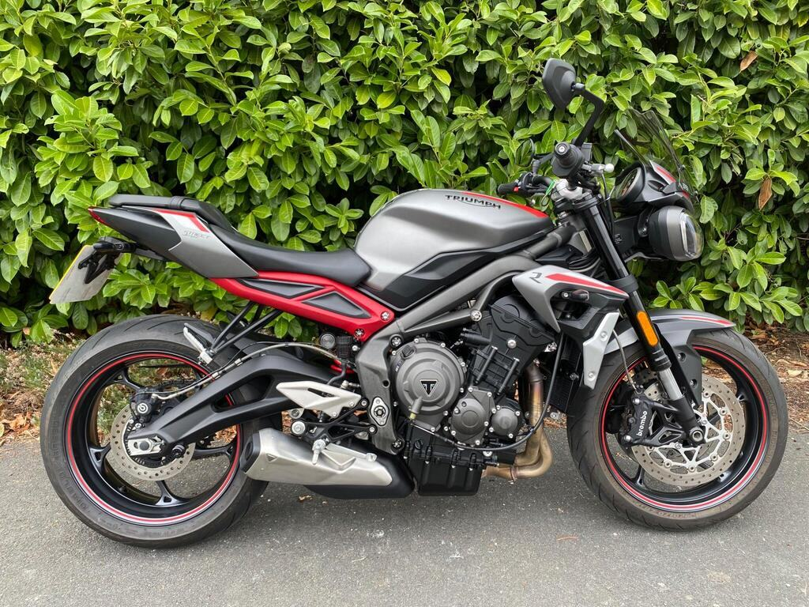
Cheapest in the hunt
2021 · Triumph
Street Triple R
£6,490 buys you a fully adjustable Showa-suspended triple with low miles.
- Year
- 2021
- Miles
- 2,273
- Price
- £6,490
◉ Tewkesbury
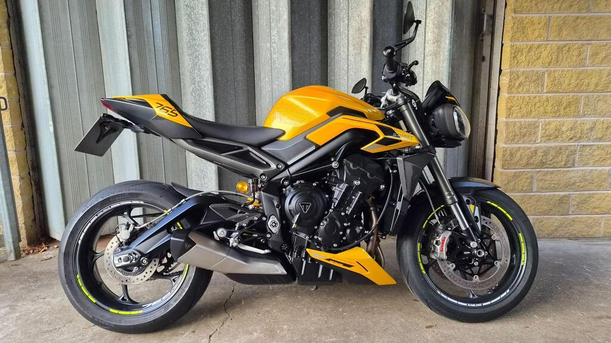
10 new bikes · 5 price drops · 1 sol
Sorted nearest to Poole first. Distances are as the crow flies, and the notes on each bike come only from the listing and the plate checks.
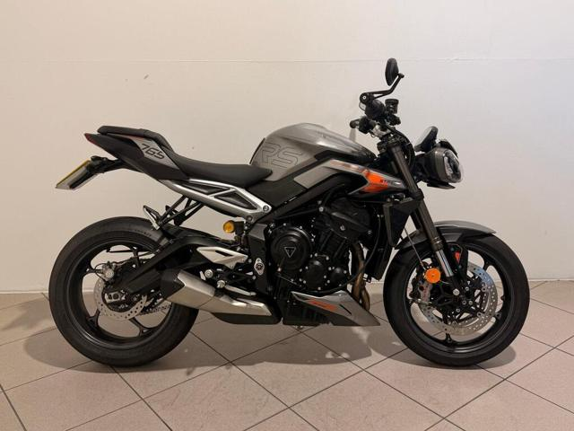
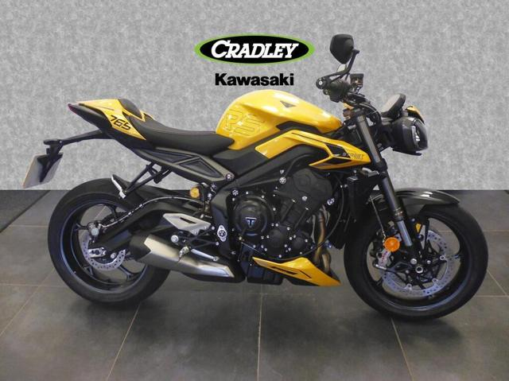
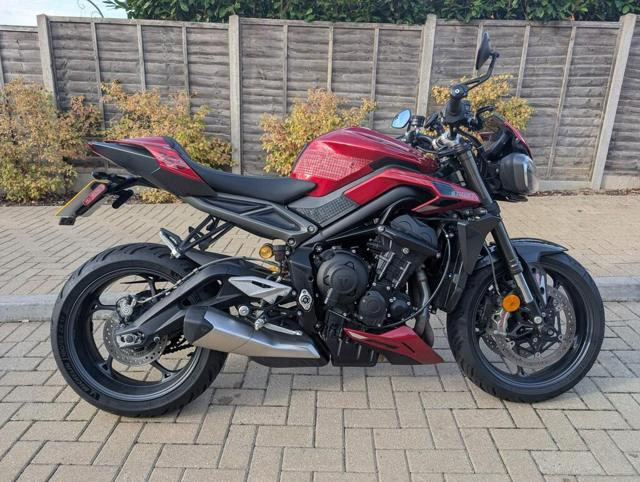
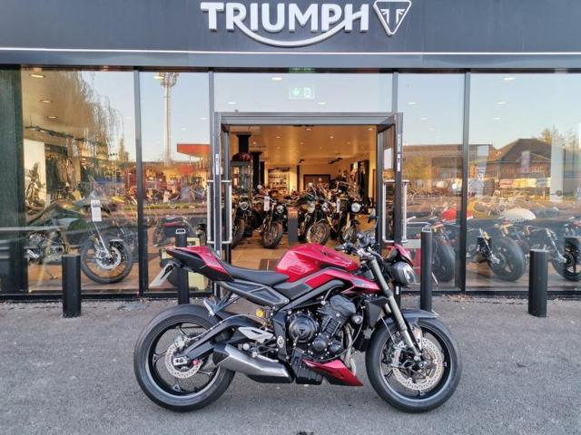
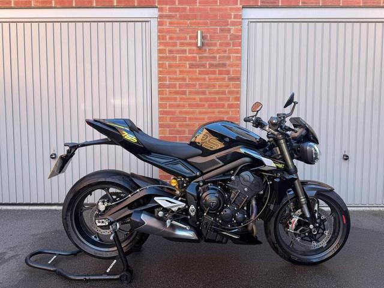
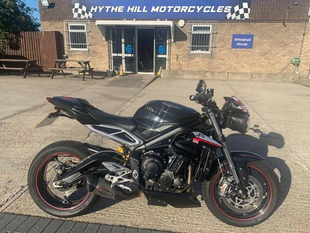
Three of these five bikes cost less than £7,000, and all have low miles. They include an approved-used 2020 RS with a dealer warranty and a 2021 R at £6,490, the cheapest in the hunt. Two are eBay listings, and one of those sellers is open to offers.
“The cheapest way into a 765 is a 2020–21 bike with low miles.”

£6,490 buys you a fully adjustable Showa-suspended triple with low miles.
◉ Tewkesbury
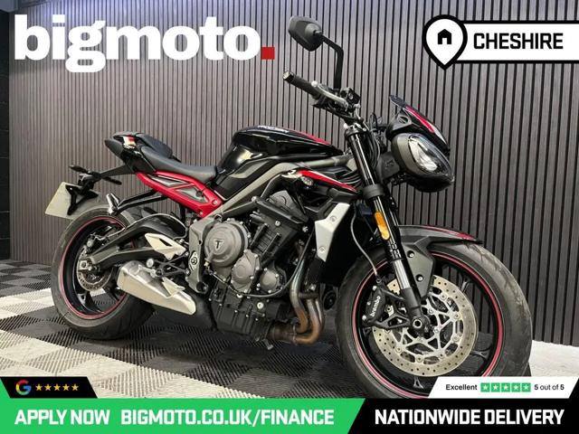
2021 Street Triple R in black, 834 miles, £6,789.
◉ Big Moto Cheshire, Macclesfield
Dealer-backed RS with a warranty, at a price that undercuts the field.
◉ Edinburgh Triumph
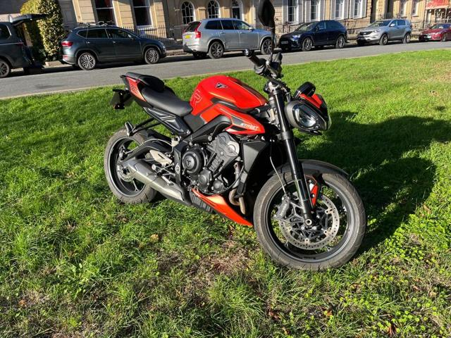
2024 Street Triple R in orange, 3,985 miles, £7,000.
◉ Private seller, Bristol
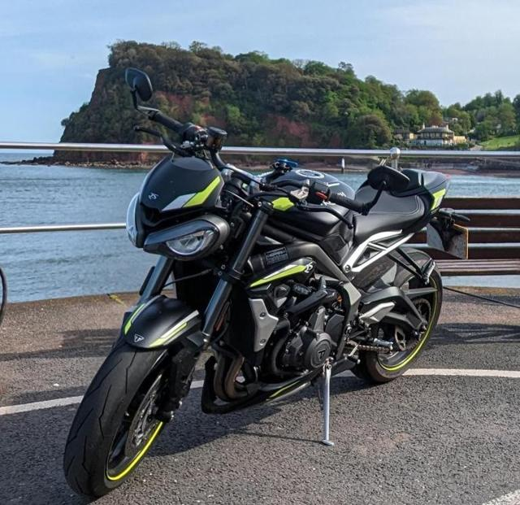
2022 Street Triple RS in black, 3,600 miles, £7,100.
◉ Willand, Devon
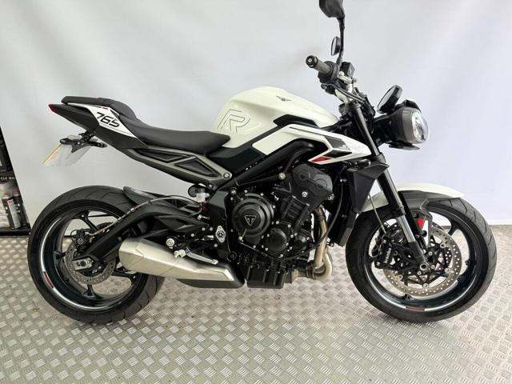
2023 Street Triple R in white, 185 miles, £7,495.
◉ Sheldon Motorcycles, Birmingham
Four yellow RS bikes are listed between Preston and Taunton. The Shorrock bike is the pick: it has the lowest miles, and its records match the government's. The Norwich bike costs less but has nearly four times the miles.
“Yellow costs a little more, and it pays to check the records.”
Cosmic Yellow · Shorrock Motorcycles, Preston
| Year | 2023 (first registered 18 Oct 2023) |
|---|---|
| Mileage | 1,421 miles |
| Owners | 3 from new |
| MOT | Passed 6 May 2026 at 904 miles, no advisories · valid to May 2027 |
| History | Full service history · spare key · Datatag |
| Price | £8,495 |
| Dealer | Shorrock, Penwortham, Preston · 01772 463575 |
| Reputation | Rated about 4.8 out of 5 from around 600 reviews |
Buy this one. DVLA and MOT records match the advert. The mileage looks genuine, and the dealer is family-run and well rated. Before buying, ask about the owner history and warranty, and get the finance terms in writing.
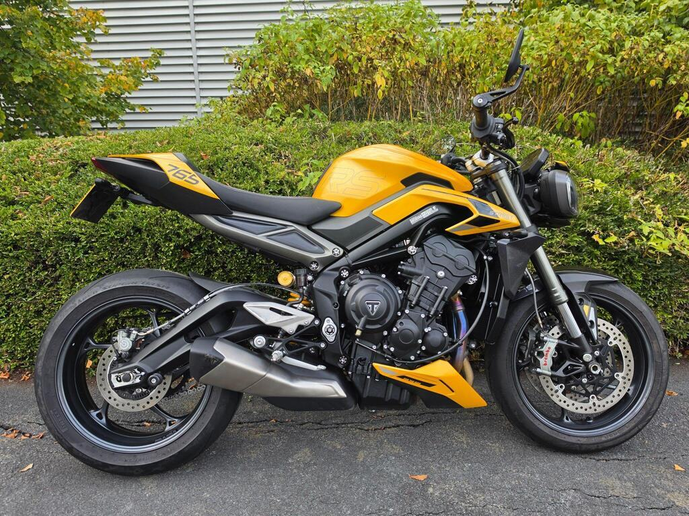
2024 RS in yellow, 3,237 miles, one owner and full service history according to the ad, at £8,490.
◉ Ams Motorcycles, Tewkesbury
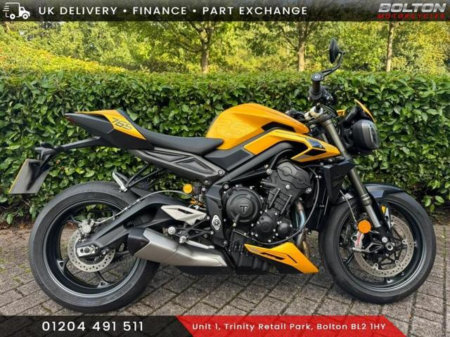
Only 1,767 miles, and the dealer offers PCP finance.
◉ Bolton Motorcycles
2025 Street Triple RS in yellow, 1,044 miles, £9,395.
◉ Cradley Kawasaki, Cradley Heath
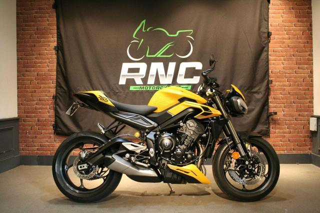
2024 Street Triple RS in yellow, 1,523 miles, £9,295.
◉ Trident Motors, Bushey
2025 Street Triple RS in cosmic yellow, 1,276 miles, £9,595.
◉ Lings Triumph Essex, Great Dunmow
2024 Street Triple RS in yellow, 9,112 miles, £8,389.
◉ Dudley, West Midlands
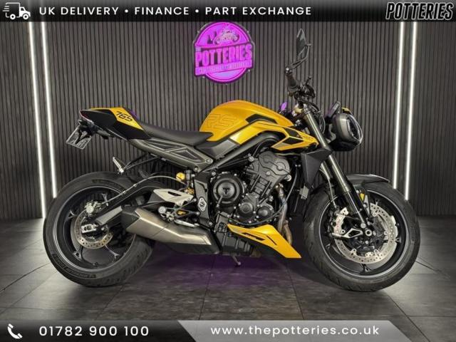
2024 Street Triple RS in yellow, 5,643 miles, £8,499.
◉ Stoke-on-Trent, Staffordshire
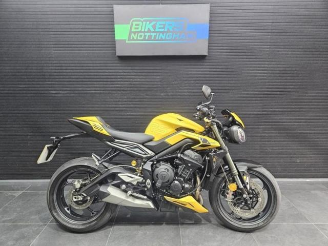
2023 Street Triple RS in yellow, 7,494 miles, £8,999.
◉ Long Eaton, Nottinghamshire
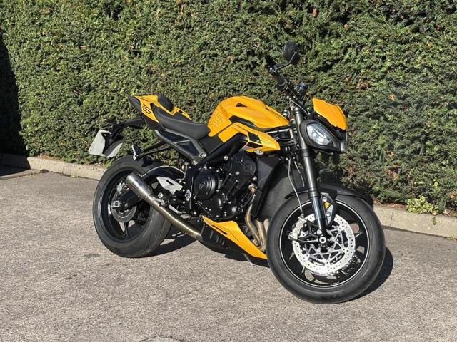
2024 Street Triple RS in yellow, 1,964 miles, £9,295.
◉ B S Bikes Limited T/A Staffordshire Triumph, Stoke On Trent
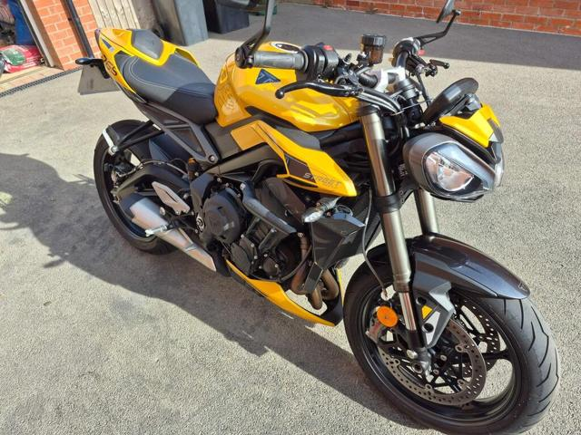
2025 Street Triple RS in yellow, 3,759 miles, £9,450.
◉ Private seller, Kettering
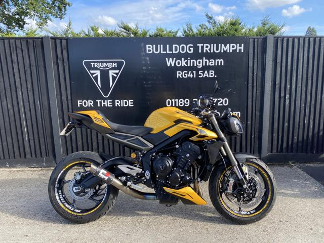
2025 Street Triple RS in yellow, 6,206 miles, £9,695.
◉ Wokingham (Cosmic Yellow - other watch)
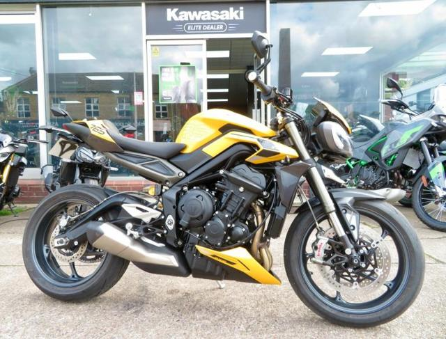
2024 Street Triple RS in yellow, 2,366 miles, £9,895.
◉ Batley, West Yorkshire
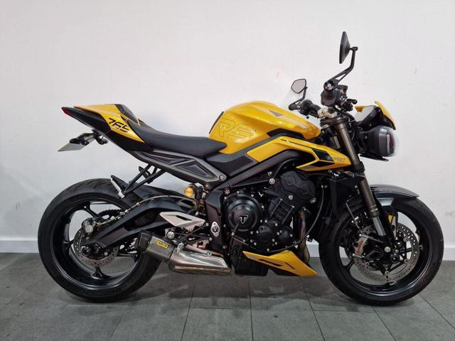
2023 Street Triple RS in yellow, 2,500 miles, £9,995.
◉ Colwyn Bay Motorcycles
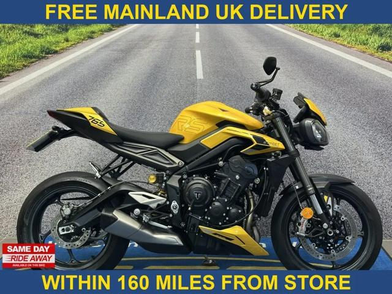
2025 Street Triple RS in yellow, 1,821 miles, £9,999.
◉ CMC Motorcycles South Wales, Newport
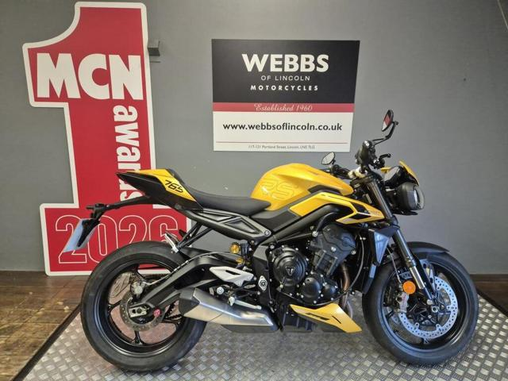
2025 Street Triple RS in yellow, 5,715 miles, £9,999.
◉ Webbs Of Lincoln
These six bikes are all within easy reach of Poole, so you could view and test-ride them before buying. They run from a 2020 RS in Ringwood to brand-new 2026 stock at Destination Triumph in Christchurch.
“You can test-ride these this weekend.”
An RS with Öhlins at the back for £6,988, a short ride away in Ringwood.
◉ Ringwood
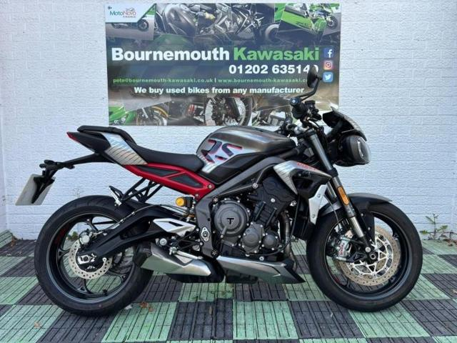
2021 Street Triple RS in silver, 5,816 miles, £7,295.
◉ Bournemouth, Dorset
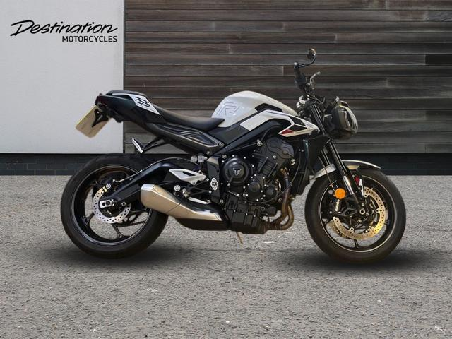
A 2023 R from Destination Triumph for £7,695.
◉ Destination Triumph, Fareham
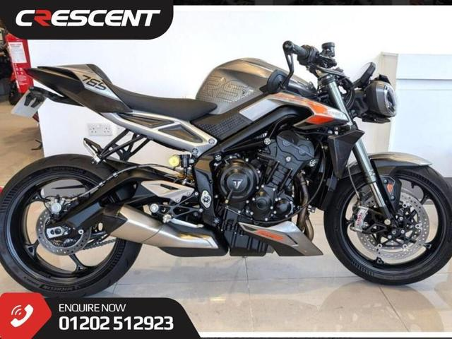
2024 Street Triple RS in silver, 7,703 miles, £8,995.
◉ Crescent Motorcycle Co Ltd Bournemouth, Bournemouth,
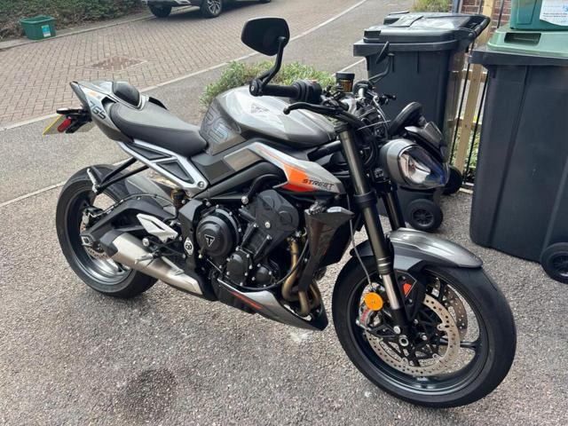
2024 Street Triple RS in silver, 398 miles, £9,495.
◉ Private seller, Weymouth
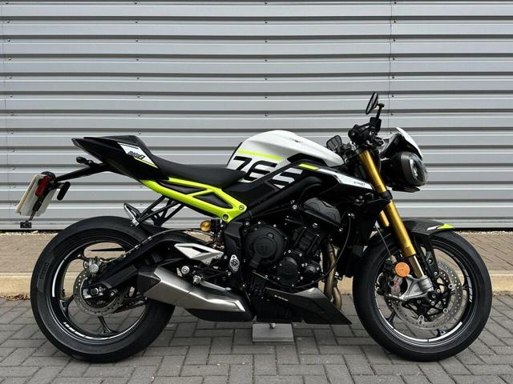
A limited-run Moto2 Edition with just 147 miles. It's practically still in the crate.
◉ Wimborne
A brand-new RS in Phantom Black. Nobody has ridden it yet.
◉ Destination Triumph, Christchurch
The Diablo Red RX has 1 mile on it, with Öhlins at both ends and clip-ons.
◉ Destination Triumph, Christchurch
The limited-run Moto2 Edition is the collector's pick of the range. Used 2023 bikes are listed between about £10,000 and £13,000. Price follows miles: the 147-mile Wimborne bike costs the most, and the 13,557-mile Ashford bike the least.
“Price follows miles: fewer miles, higher price.”
2023 Moto2 Edition from a private seller in Alcester, 5,775 miles and 3 owners according to the ad, at £9,500.
◉ Private seller, Alcester
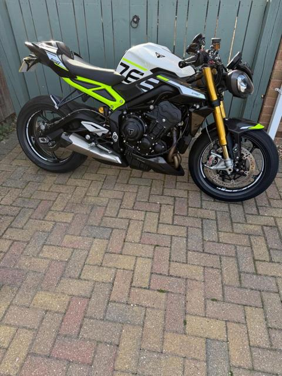
2023 Street Triple Moto2 Edition in white, 2,700 miles, £10,295.
◉ Private seller, Peterborough
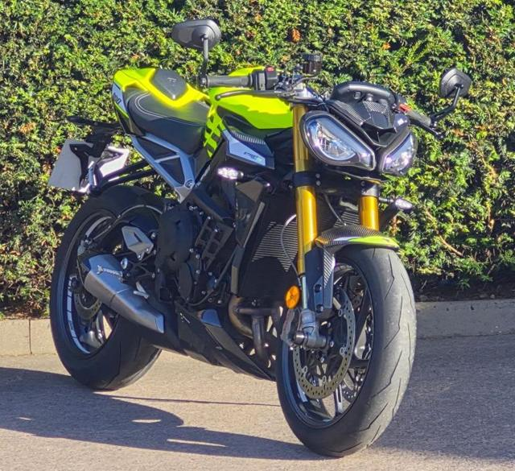
2023 Street Triple Moto2 Edition in yellow, 10,000 miles, £10,395.
◉ Stoke
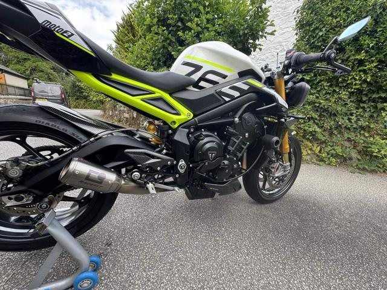
2023 Street Triple Moto2 Edition in white, 1,754 miles, £11,300.
◉ Private seller, Redruth
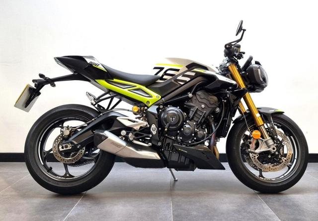
2023 Street Triple 765 in white, 1,617 miles, £11,495.
◉ Blade Triumph Stratford, Stratford-upon-avon
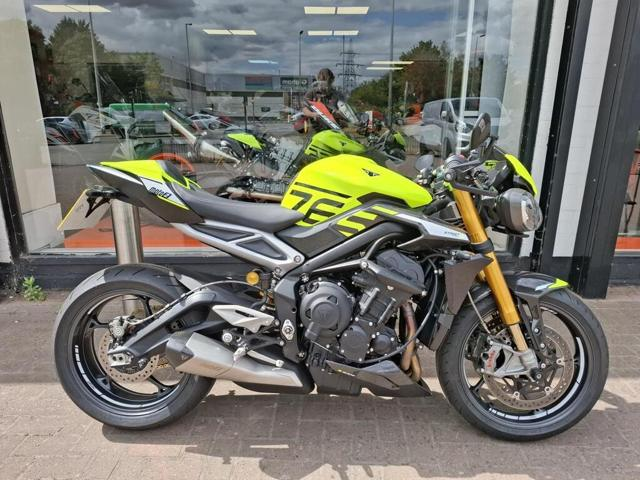
2023 Street Triple Moto2 Edition in yellow, 1,875 miles, £11,495.
◉ DMC BIRMINGHAM
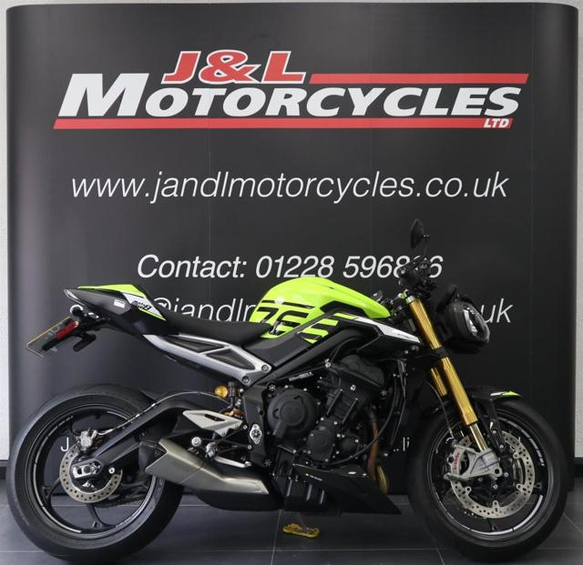
2023 Street Triple Moto2 Edition in yellow, 1,125 miles, £11,795.
◉ J&L Motorcycles, Carlisle
A limited-run Moto2 Edition with just 147 miles. It's practically still in the crate.
◉ Wimborne
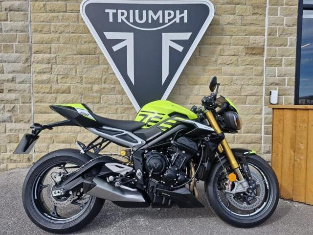
2023 Street Triple Moto2 Edition in yellow, 370 miles, £12,765.
◉ Shipley, West Yorkshire
These are ex-demo, pre-registered and new 2026 bikes, priced from £10,195. They cost more but come almost new, and the list includes another Moto2 at Carl Rosner.
“Almost new, for about £10k.”
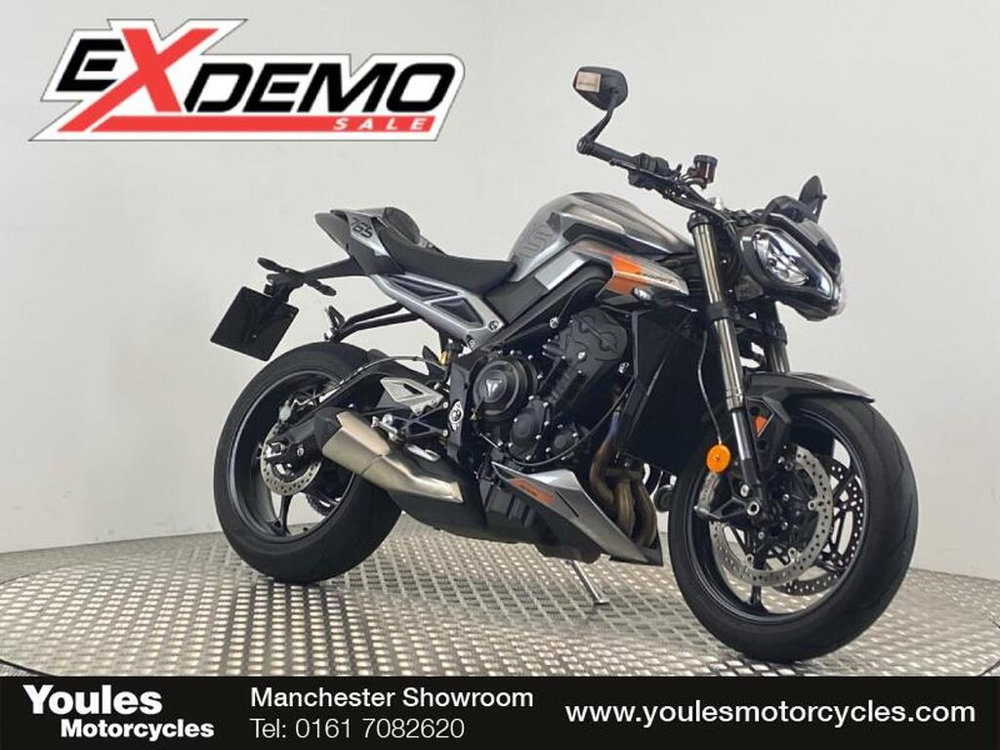
2026 RS ex-demo in Silver Ice from Youles Manchester Triumph, 2,292 miles according to the ad, at £8,999.
◉ Youles Manchester Triumph
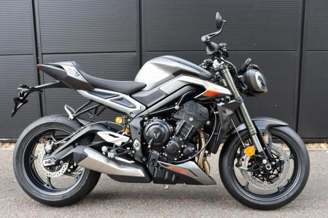
2026 Street Triple RS in silver, 448 miles, £9,195.
◉ Triumph West London, West Byfleet
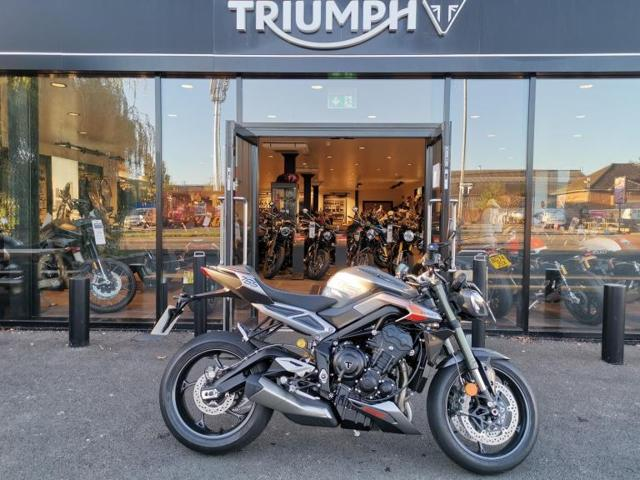
2026 Street Triple RS in silver, 480 miles, £9,895.
◉ Tamworth, Staffordshire
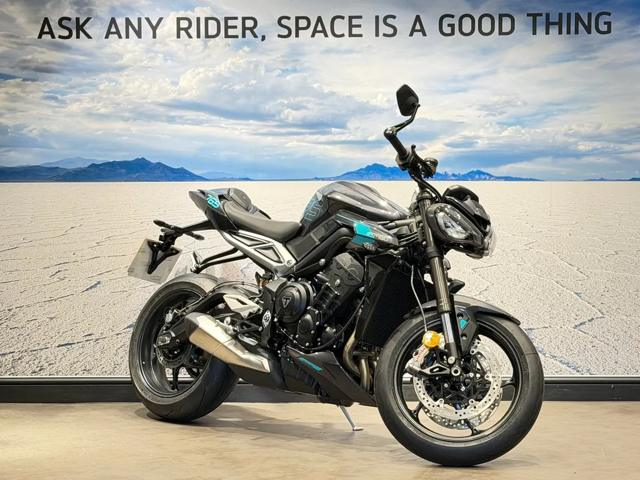
Pre-registered 2026 RS, 0 miles according to the ad, at £9,989. Sold by Pure Triumph Woburn.
◉ Pure Triumph Woburn, Milton Keynes
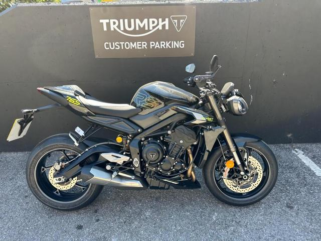
2026 Street Triple RS in black, 26 miles, £9,990.
◉ Ocean Triumph Plymouth
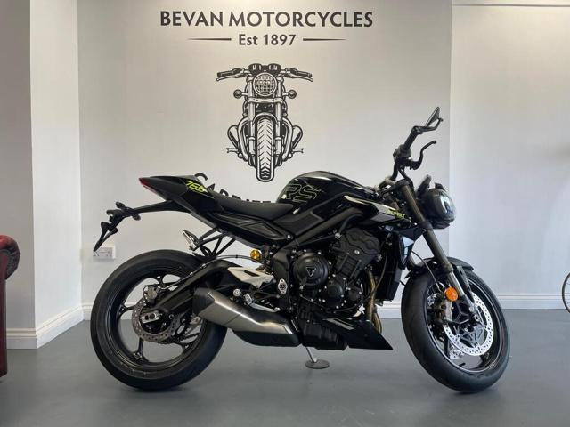
2026 Street Triple RS in black, 0 miles, £9,995.
◉ Robert Bevan \u0026 Sons (Motorcycles) Limited, Cardiff
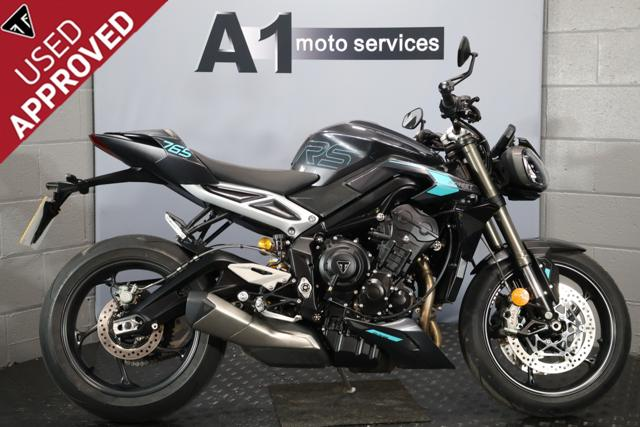
A 2026 RS with 871 miles on it, for less than new.
◉ A1 Moto, York
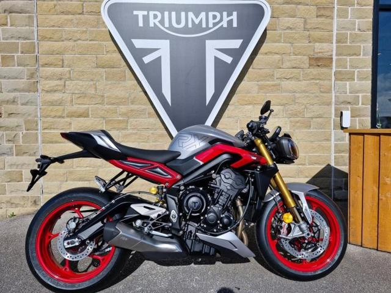
2026 Street Triple RX in silver, 900 miles, £10,295.
◉ Shipley, West Yorkshire
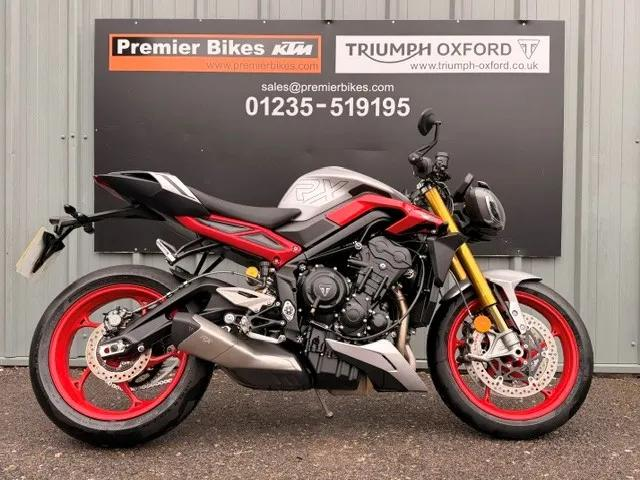
2026 Street Triple RX in silver, 198 miles, £10,450.
◉ Premier Bikes (Didcot) Ltd, ABINGDON
A brand-new RS in Phantom Black. Nobody has ridden it yet.
◉ Destination Triumph, Christchurch
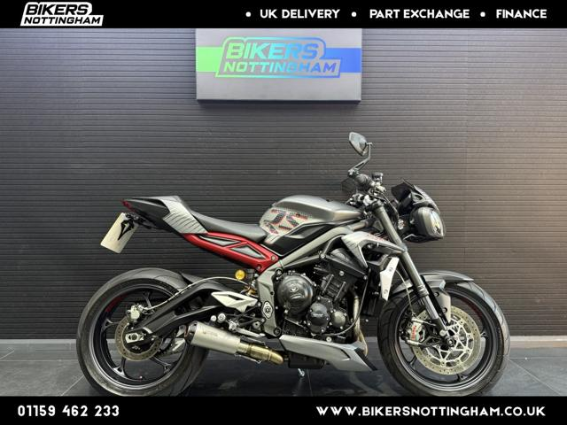
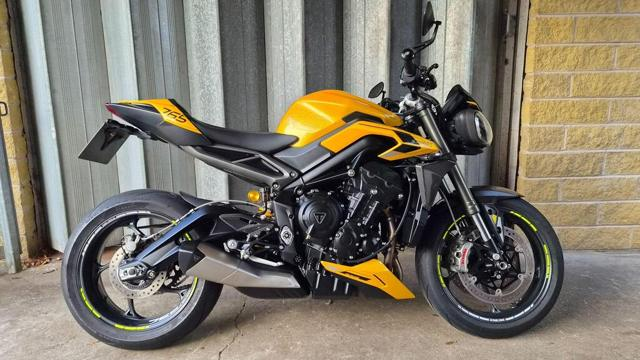
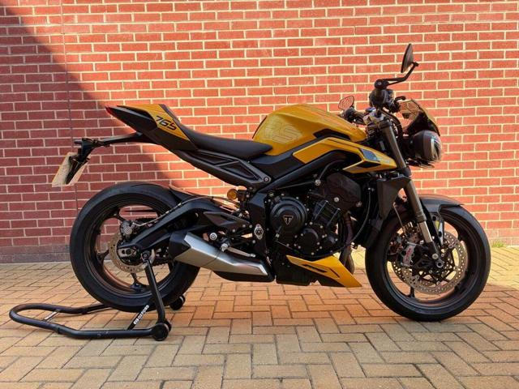
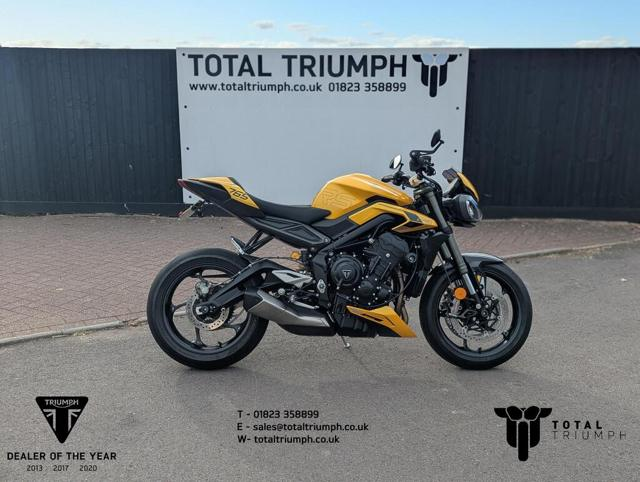
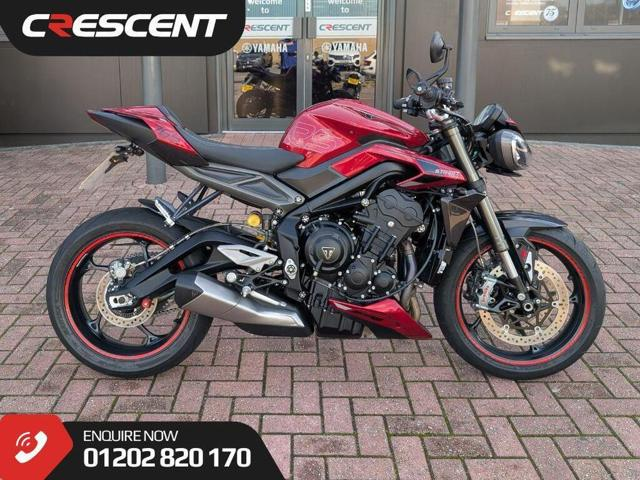


No bikes match those filters.
Every bike in the hunt has the same 765cc liquid-cooled triple. The 2023 update raised the RS, Moto2 and RX to 130PS and 80Nm. Year and model decide the rest: suspension, brakes and fuel tank.
“Same heart, different weapons.”
Swipe the table →
| Spec | 2020–22 R | 2020–22 RS | 2023+ R | 2023+ RS | Moto2 Edition | 2026 RX |
|---|---|---|---|---|---|---|
| Power | 118PS @ 12,000rpm | 123PS @ 11,750rpm | 120PS @ 11,500rpm | 130PS @ 12,000rpm | 130PS @ 12,000rpm | 130PS @ 12,000rpm |
| Torque | 77Nm @ 9,400rpm | 79Nm @ 9,350rpm | 80Nm @ 9,500rpm | 80Nm @ 9,500rpm | 80Nm @ 9,500rpm | 80Nm @ 9,500rpm |
| Weight | 168kg dry | 166kg dry | 189kg wet | 188kg wet | 188kg wet | 188kg wet |
| Seat height | 825mm | 825mm | 826mm | 836mm | 839mm | 839mm |
| Front suspension | Showa, adjustable | Showa 41mm BPF, fully adj. | Showa 41mm SFF-BP, fully adj. | Showa 41mm BPF, fully adj. | Öhlins NIX30, fully adj. | Öhlins NIX30, fully adj. |
| Rear suspension | Showa, adjustable | Öhlins STX40, fully adj. | Showa piggyback, fully adj. | Öhlins STX40, fully adj. | Öhlins STX40, fully adj. | Öhlins STX40, fully adj. |
| Front brakes | Brembo M4.32 | 2×310mm, Brembo M50 | 2×310mm, Brembo M4.32, OC-ABS | 2×310mm, Brembo Stylema, OC-ABS | 2×310mm, Brembo Stylema, OC-ABS | 2×310mm, Brembo Stylema, OC-ABS |
| Electronics | Two-way Shift Assist standard | Shift Assist, Bluetooth-ready TFT | Up/down Shift Assist, cornering ABS & TC | Up/down Shift Assist, cornering ABS & TC, 5 modes | As RS + clip-ons, ABS Track mode | Cornering ABS & TC, Track mode, clip-ons |
| Fuel tank | 17.4L | 17.4L | 15L | 15L | 15L | 15L |
Manufacturer claims. 2020–22 bikes quote dry weight, 2023+ quote wet. Sources: Triumph UK – Street Triple 765 spec · Triumph media – 2023 range · Triumph – Moto2 spec · Triumph UK – 765 RX · Triumph media – 2020 RS · MCN – 2020–22 RS review · Motorcycle.com – 2020 RS first ride · Motorcycle.com – 2020 R first look
“New Brembo Stylema calipers are so strong they’d stop a superbike in its tracks.”
“Acceleration and handling are sharper and with such a friendly riding position and power delivery it’s a cinch to ride fast.”
“The lurid lumo yellow version would make Rossi reach for his sunnies.”
“In the high-speed direction changes through Maggotts and Becketts, the Moto2 Edition is simply sublime.”
“The RX continually invites you to let go of the brakes and tip into corners ever quicker.”
“The dream ticket for both road and track.”
“The R is still a joy to ride and will cover ground every bit as quickly as the RS.”
“A glorious masterpiece from Triumph.”
Owners rate it 4.9/5 overall and 4.8/5 for reliability.
Editor score 92.5/100, including 19/20 for the engine.
No press quote found for this model yet.
Short quotes, each linked to its source. Star ratings appear only where the publication gave one.